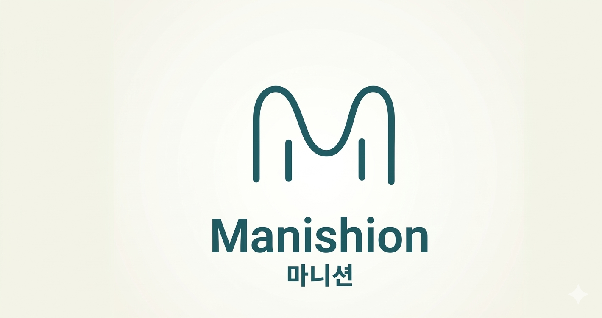

많이 시원해? 마니션해!
가장 힙하고 시원한 헬스엔터테인먼트의 시작.

가장 힙하고 시원한 헬스엔터테인먼트의 시작.
우리의 로고 속 고양이처럼 유연하고 당당하게.
지루했던 헬스케어에 재미를 더해,
스스로를 돌보는 시간이 즐거운 놀이가 됩니다.
세종대왕의 '의방유취' 탄생 연도, Anno 1445.
전통의 지혜를 바탕으로,
일상에서 즉각적으로 "시원함"을 느끼는 솔루션을 만듭니다.
마니션은 세상에 없던 시원한 가치를 함께 만들어갈 파트너를 찾습니다.
각종 문의는 아래 이메일이나
SNS 채널을 통해 남겨주세요.
Copyright © 2026 Manishion. All Rights Reserved.